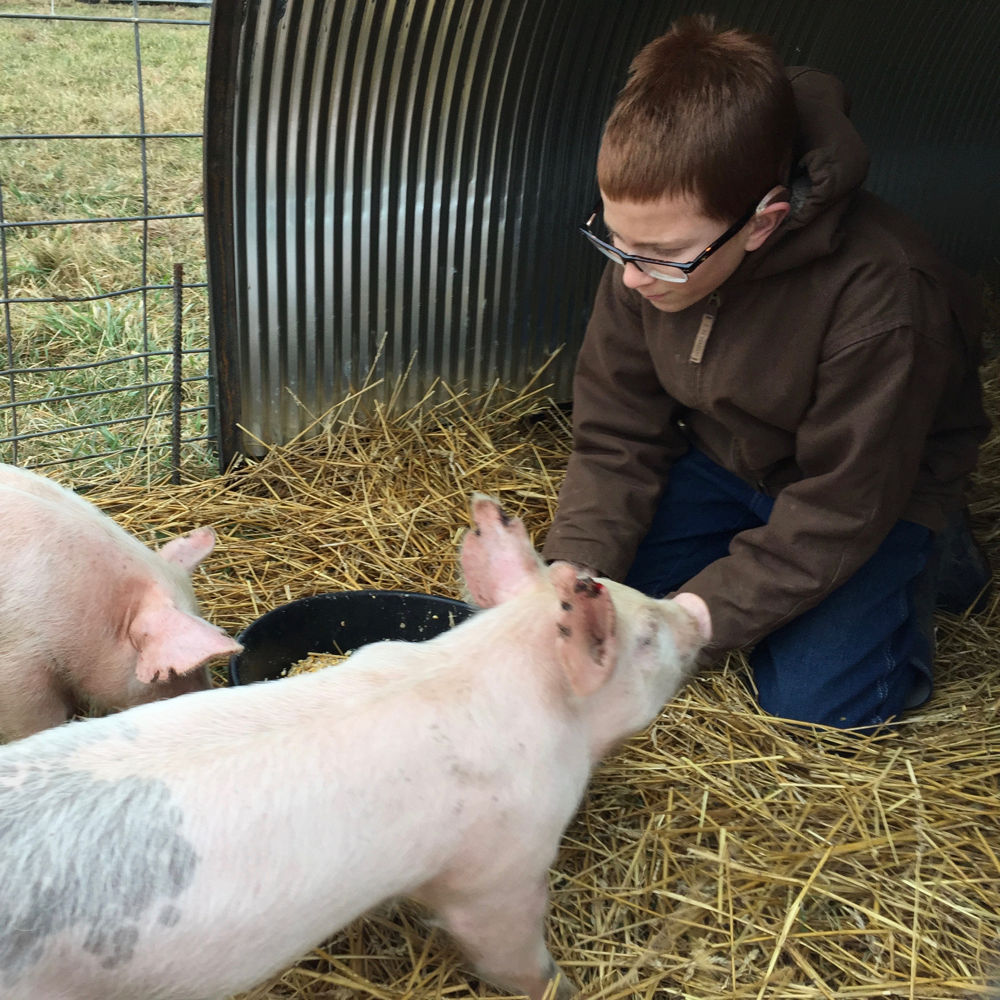

<div class="diary">
	<div class="container-fluid">
		<h2>Farm Diary</h2>
		<div class="row" style="margin-bottom:40px">
			<div class="col-xs-8 blurb">
				Welcome to the diary of Eight Kids Farm! Here we'll keep you updated on the latest happenings at the farm. We'll try to get everyone to contribute something so you can learn about the farm from the kids' and adults' perspectives. Feel free to let us know if you have any questions about what and why we do things that you would like to see us discuss, we'd be happy to share. Also, if you've heard rumors of something crazy Papa did (like the time he put a sheep in the back of Mama's van) and you'd like the official story, just holler!
			</div>
			<div class="col-xs-4">
				
			</div>

		</div>
	<ul>
	  {% for post in site.categories.diary %}
			<li>
				<a class="diary-title" href="{{ post.url | prepend: site.baseurl }}">{{ post.title }}</a>
				<p class="post-meta">{{ post.date | date: "%b %-d, %Y" }}{% if post.author %} • {{ post.author }}{% endif %}</p>
				{{ post.excerpt }}
			</li>
	  {% endfor %}
	</ul>
</div>
</div>
